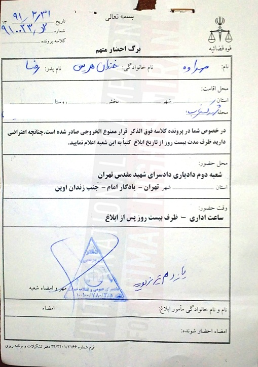

|
|

صدور قرار ممنوع الخروجی برای همسر و فرزند ۱۳ ساله نسرین ستوده
پنج شنبه22 تیر 1391
کمپین بین المللی حقوق بشر: شعبه دوم دادیاری دادسرای شهیدمقدس تهران (جنب زندان اوین) با ارسال نامه های جداگانه به رضا خندان همسر ومهراوه دختر نسرین ستوده وکیل دادگستری، آنها را ممنوع الخروج کرد. مهراوه خندان فرزند آقای خندان تنها ۱۲ سال ونیم دارد و مشخص نیست که به چه دلیل فرزند نسرین ستوده با چنین محرومیتی مواجه شده است. این اولین بار است برای فرزند نوجوان یک زندانی سیاسی قرار ممنوع الخروجی صادر می شود.
تاریخ «برگ احضار متهم» ۳۱ خرداد ماه است ودر آن گفته شده که چنانچه اعتراضی به قرارممنوع الخروجی وجود دارد ضرف مدت بیست رو از تاریخ ابلاغ کتبا به شعبه دادیاری اعلام شود.
کمپین بین المللی حقوق بشر در ایران ضمن ابراز تاسف از دور جدیدی از فشار بر خانواده های زندانیان عقیدتی حکم ممنوع الخروجی برای رضا خندان و دختر نوجوان وی را بخش دیگری ازاعمال فشارروانی بر روی زندانیان سیاسی دربند ارزیابی می کند. هیچ دلیلی در برگه احضاریه ای که برای مهراوه ورضا خندان صادر شده است برای صدور این قرار ذکر نشده است.
رضا خندان به کمپین بین المللی حقوق بشر در ایران گفت که دریافت چنین قراری کاملا بی مقدمه بود: « نه فکرش را می کردیم نه سفری در پیش داشتیم و به نظرم هدف از این کار بیشتر از بین بردن تعادل روحی و ذهنی خانواده و وارد کردن یک شوک روحی به کل اعضای خانواده است.» او افزود: « مهراوه زیر ۱۳ سال دارد واگر جرمی مرتکب شده باشد در صلاحیت دادسرای سیاسی وامنیتی نیست که رسیدگی کند چون همین جوری که کسی را ممنوع الخروج نمی کنند. ابتدا باید اتهامی در انجا مطرح شود وسپس با استناد به آن اتهام فرد تحت پیگرد حقوقی وقضایی قراربگیرد و سپس قرار ممنوع الخروجی برایش صادر شود تا به اتهام مطرح شده که ما هم از آن بی خبریم رسیدگی شود.» رضا خندان همچنین افزود: « صدور قرار ممنوع الخروجی وارسال برگه احضار متهم برای دختر ۱۲ ونیم ساله ام در حالی صورت گرفته است که به اتهامات کودکان و نوجوانان در دادگاه های ویژه اطفال رسیدگی می شود.»
تصویر برگ احضار مهراوه خندان در زیر قابل مشاهده است:
